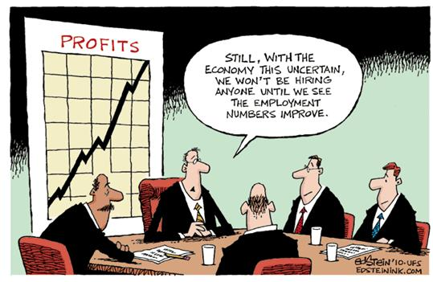

Catch-22s
A Catch-22 is something like a paradoxical situation, or a situation where an individual is trapped between two contradictory rules. In the novel there are mentions to many Catch-22s such as one that prevents Yossarian from getting out of flying missions.
“There was only one catch and that was Catch-22, which specified that a concern for one's safety in the face of dangers that were real and immediate was the process of a rational mind. Orr was crazy and could be grounded. All he had to do was ask; and as soon as he did, he would no longer be crazy and would have to fly more missions. Orr would be crazy to fly more missions and sane if he didn't, but if he was sane he had to fly them. If he flew them he was crazy and didn't have to; but if he didn't want to he was sane and had to. Yossarian was moved very deeply by the absolute simplicity of this clause of Catch-22 and let out a respectful whistle."
To summarize the quote, Yossarian could get out of flying missions if he were crazy, but to ask to be grounded would imply that he is not crazy and would prevent him from being grounded. And with people being needed for The War, there was no incentive for higher-ups to have soliders checked for mental health.
 One real-world example of a Catch-22 is one that many people looking for work have come accoss. Some job offers require the employee to have a lot of experience, but to gain that experience in the first place would require a job.
One real-world example of a Catch-22 is one that many people looking for work have come accoss. Some job offers require the employee to have a lot of experience, but to gain that experience in the first place would require a job.
Another example would be Student Governments, which typically allow students and student heads to have the power to do anything they want, but the school dean or principal must first approve of it.